Basic module abilities:
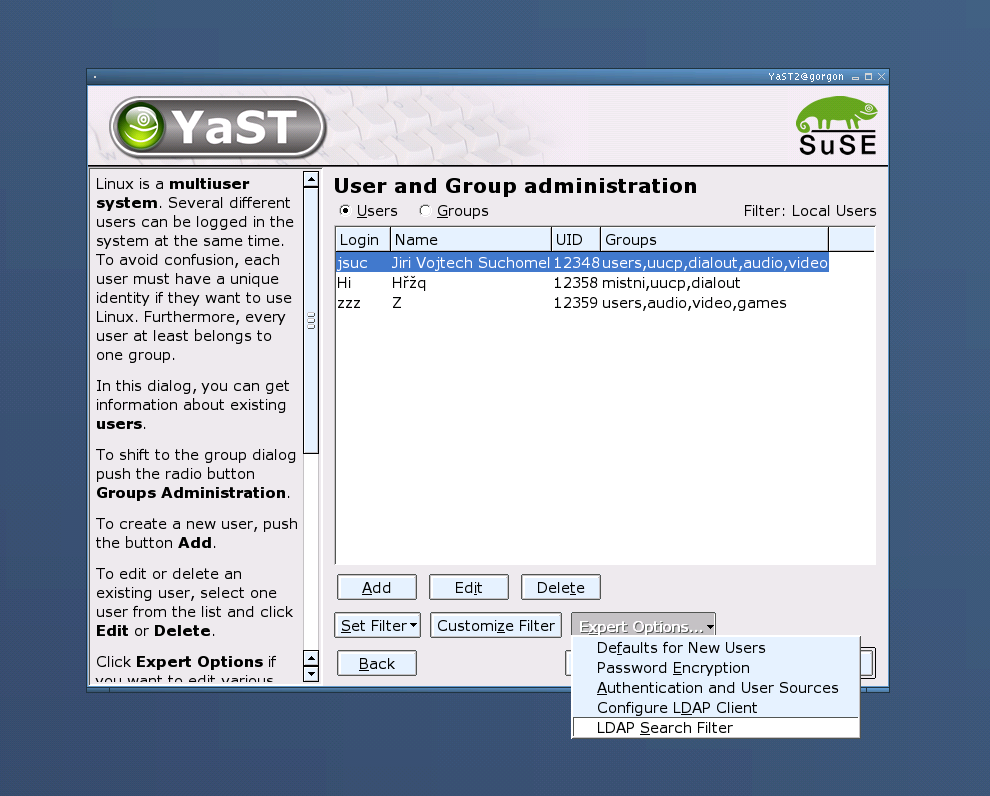
This dialog provides multiple filters (views) to sets of users (local/system/ldap/nis/custom). "Customize Filter" button will open the Customize popup for configuring the custom view (e.g. system+local). This setting is saved to configuration file (currently /var/lib/YaST2/users.ycp).
Customize popup
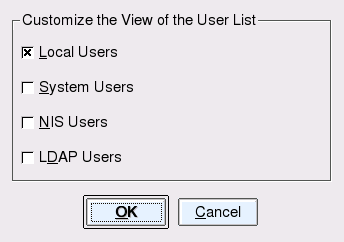
In this popup user can customize the view of the users set. (He can e.g. set to view only local and NIS users.)
"Expert Options" menubutton provides extended features:
Here the default settings for new users could be set.
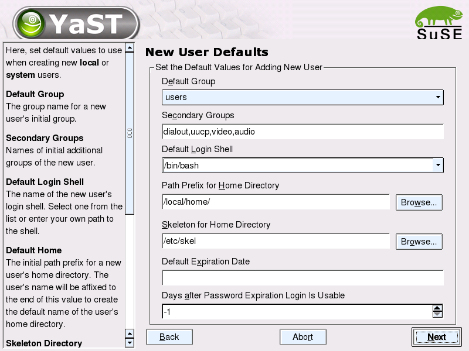
For password encryption, use only small popup (known from installation sequence):
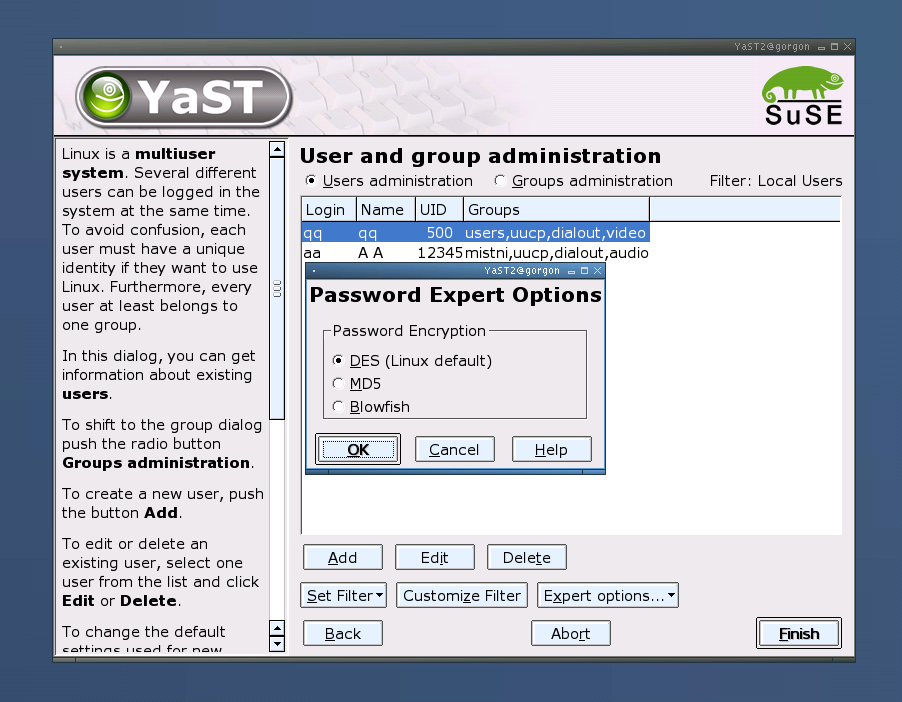
There is a list of various modules which configure authentization of user data sources and its stettings. The modules could be called from here to change the appropriate configuration.
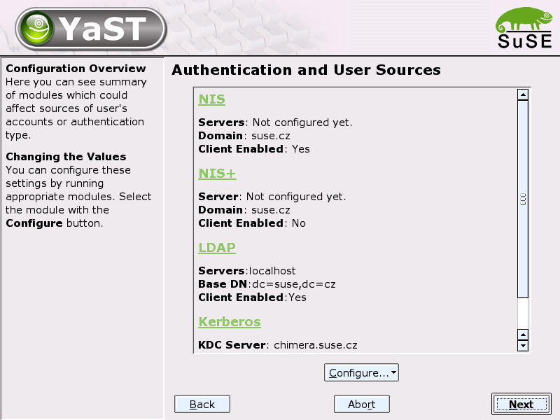
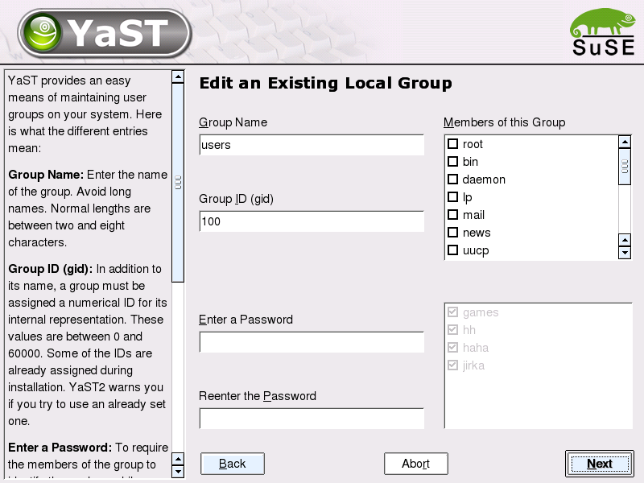
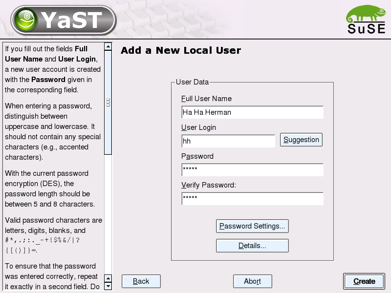
Suggestion creates a proposal for username from the given full name
From this dialog, two additional could be opened: "User Details Dialog" and "User Password Settings" dialog as it arises from the button labels.

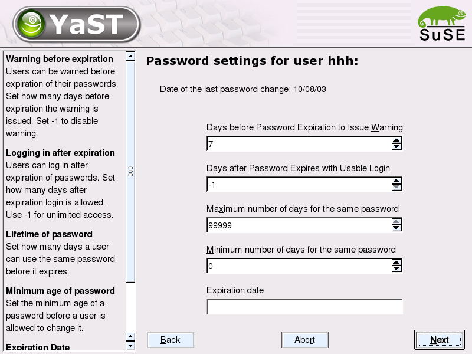
This popup is envoked by entry in "Expert Options" menubutton from Summary dialog. It is used for setting filter for LDAP users/groups which are to be loaded from LDAP server (can be defined some smaller group when it is not necessary to read all of them).

After Details dialog, there is one more dialog, called "LDAP settings". In the dialog there is be possibility to set values that are used only for LDAP users, just like "e-mail", "homePhone", "description" or "roomNumber".
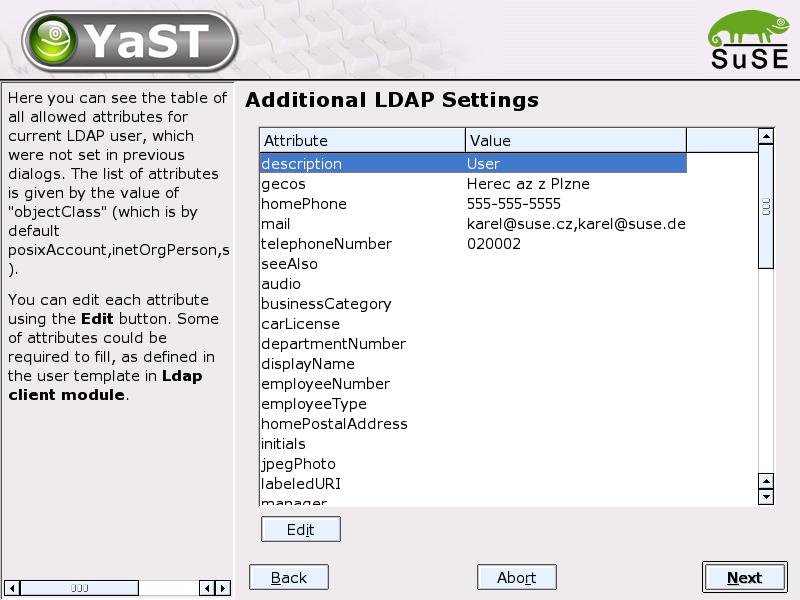
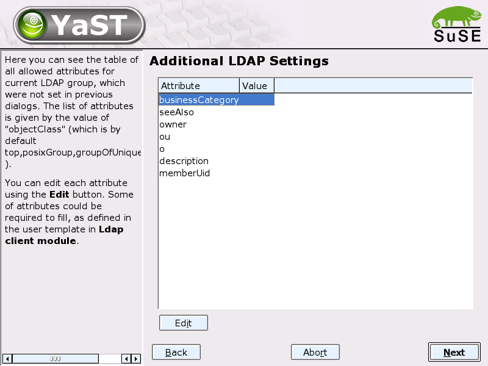
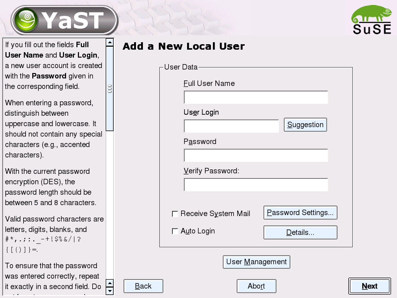
The additional widhets (2 checkboxes and 1 button) are shown only in this (installation) time and only for this first user. So you won't see them if you go to Summary dialog and use "Add" button to add new user with the standard way.
Recieve System Mail sets forwaring of root's mail to this user
Auto Login means that user will be logged in automatically without
prompting for pasword (works only with KDM). It is true by default.
User Management brings us to traditional "Summary" dialog of users
module.